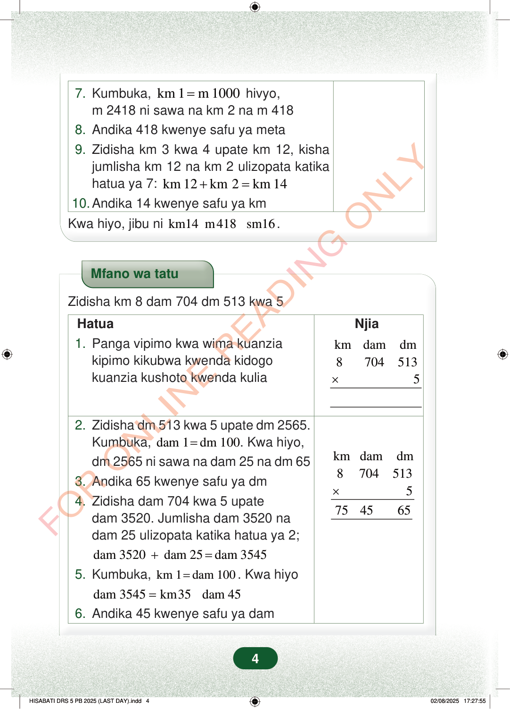

7.Kumbuka,km 1m 1000=hivyo,m 2418 ni sawa na km 2 na m 4188.Andika 418 kwenye safu ya meta9.Zidisha km 3 kwa 4 upate km 12, kishajumlisha km 12 na km 2 ulizopata katikahatua ya 7:km 12km 2km 14+=10.Andika 14 kwenye safu ya kmKwa hiyo, jibu nikm14 m418 sm16.Mfano wa tatuZidisha km 8 dam 704 dm 513 kwa 5NjiaHatua1.Panga vipimo kwa wima kuanziakipimo kikubwa kwenda kidogokuanzia kushoto kwenda kuliakmdamdm87045135×kmdamdm87045135754565×2.Zidisha dm 513 kwa 5 upate dm 2565.Kumbuka,dam 1dm 100=. Kwa hiyo,dm 2565 ni sawa na dam 25 na dm 653.Andika 65 kwenye safu ya dm4.Zidisha dam 704 kwa 5 upatedam 3520. Jumlisha dam 3520 nadam 25 ulizopata katika hatua ya 2;dam 3520dam 25dam 3545+=5.Kumbuka,km 1dam 100=. Kwa hiyodam 3545km35 dam 45=6.Andika 45 kwenye safu ya dam4
7. Kumbuka, km 1 m 1000 = hivyo, m 2418 ni sawa na km 2 na m 418 8. Andika 418 kwenye safu ya meta 9. Zidisha km 3 kwa 4 upate km 12, kisha jumlisha km 12 na km 2 ulizopata katika hatua ya 7: km 12 km 2 km 14 + = 10. Andika 14 kwenye safu ya km
Kwa hiyo, jibu ni km14 m418 sm16 .
Mfano wa tatu
Zidisha km 8 dam 704 dm 513 kwa 5
Njia
Hatua 1. Panga vipimo kwa wima kuanzia kipimo kikubwa kwenda kidogo kuanzia kushoto kwenda kulia
km dam dm 8 704 513 5 ×
km dam dm 8 704 513 5 75 45 65 ×
2. Zidisha dm 513 kwa 5 upate dm 2565. Kumbuka, dam 1 dm 100 = . Kwa hiyo, dm 2565 ni sawa na dam 25 na dm 65 3. Andika 65 kwenye safu ya dm 4. Zidisha dam 704 kwa 5 upate dam 3520. Jumlisha dam 3520 na dam 25 ulizopata katika hatua ya 2;
dam 3520 dam 25 dam 3545 + = 5. Kumbuka, km 1 dam 100 = . Kwa hiyo dam 3545 km35 dam 45 = 6. Andika 45 kwenye safu ya dam
4
Hatua za mwisho za hesabu zinaonyesha kuwa m 2418 ni km 2 na m 418, kisha km 3 zikizidishwa kwa 4 hupata km 12. Jibu la mwisho ni km 14 m 418 sm 16.7. Kumbuka, km 1 = m 1000 hivyo, m 2418 ni sawa na km 2 na m 4188. Andika 418 kwenye safu ya meta9. Zidisha km 3 kwa 4 upate km 12, kisha jumlisha km 12 na km 2 ulizopata katika hatua ya 7: km 12 + km 2 = km 1410. Andika 14 kwenye safu ya kmKwa hiyo, jibu ni km14 m418 sm16.Mfano wa tatu unaonyesha jinsi ya kuzidisha km 8, dam 704 na dm 513 kwa 5 hatua kwa hatua. Upande wa kulia kuna mpangilio wa hesabu unaoonyesha kubeba vipimo kutoka dm kwenda dam na kutoka dam kwenda km.Mfano wa tatuZidisha km 8 dam 704 dm 513 kwa 5HatuaNjia1. Panga vipimo kwa wima kuanzia kipimo kikubwa kwenda kidogo kuanzia kushoto kwenda kuliakm dam dm8 704 513× 52. Zidisha dm 513 kwa 5 upate dm 2565.Kumbuka, dam 1 = dm 100.Kwa hiyo, dm 2565 ni sawa na dam 25 na dm 65.3. Andika 65 kwenye safu ya dm4. Zidisha dam 704 kwa 5 upate dam 3520.Jumlisha dam 3520 na dam 25 ulizopata katika hatua ya 2; dam 3520 + dam 25 = dam 35455. Kumbuka, km 1 = dam 100.Kwa hiyo dam 3545 = km35 dam 456. Andika 45 kwenye safu ya damkm dam dm8 704 513× 575 45 65